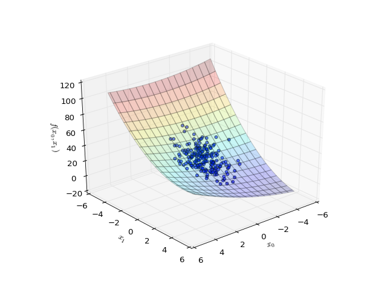

revrand.utils.datasets.make_regression¶
-
revrand.utils.datasets.make_regression(func, n_samples=100, n_features=1, bias=0.0, noise=0.0, random_state=None)¶ Make dataset for a regression problem.
Examples
>>> f = lambda x: 0.5*x + np.sin(2*x) >>> X, y = make_regression(f, bias=.5, noise=1., random_state=1) >>> X.shape (100, 1) >>> y.shape (100,) >>> X[:5].round(2) array([[ 1.62], [-0.61], [-0.53], [-1.07], [ 0.87]]) >>> y[:5].round(2) array([ 0.76, 0.48, -0.23, -0.28, 0.83])
import matplotlib.pyplot as plt
import numpy as np
from revrand.utils.datasets import make_regression
f = lambda x: 0.5 * x + np.sin(2 * x)
x = np.arange(-3, 3, 0.2)
y_true = f(x)
X, y = make_regression(f, n_samples=200, noise=0.15, random_state=1)
fig, ax = plt.subplots()
ax.plot(x, y_true, 'r-', label=r'True')
ax.scatter(X, y, alpha=0.4, label=r'Noise $\beta=0.15$')
ax.legend(loc='upper left')
ax.set_xlabel('$x$')
ax.set_ylabel('$y$')
plt.show()
(Source code, png, hires.png, pdf)
{kind=link}
{kind=link}

Multidimensional¶
import matplotlib.pyplot as plt
import numpy as np
from revrand.utils.datasets import make_regression
from mpl_toolkits.mplot3d import Axes3D
f = lambda x0, x1: (x1 - 5) ** 2 + .5 * x0 * x1 + .25 * (x0 + 4) ** 2
x1, x0 = np.mgrid[-5:5:0.2, -5:5:0.2]
y_true = f(x0, x1)
X, y = make_regression(f, n_samples=200, n_features=2, noise=0.15,
random_state=5)
fig = plt.figure()
ax = plt.axes(projection='3d', azim=50)
ax.plot_surface(x0, x1, y_true, rstride=3, cstride=3, cmap=plt.cm.jet,
alpha=0.2)
ax.scatter(X[:, 0], X[:, 1], y, alpha=0.6)
ax.set_xlabel('$x_0$')
ax.set_ylabel('$x_1$')
ax.set_zlabel('$f(x_0, x_1)$')
plt.show()
(Source code, png, hires.png, pdf)
{kind=link}
{kind=link}
